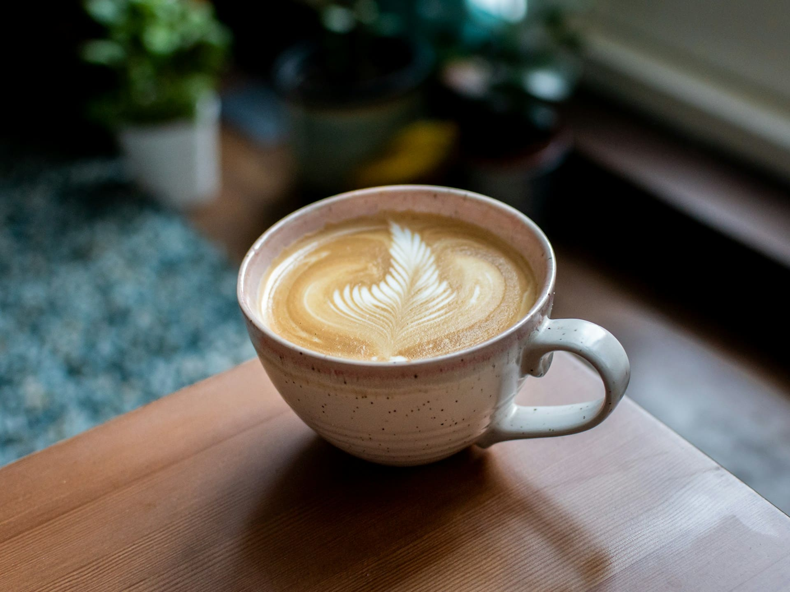

Exclusivo
Café colombiano
Conocido por su suavidad y dulzura, este café de altura representa la excelencia cafetera de Colombia. Su sabor equilibrado es perfecto para aquellos que buscan una taza suave pero llena de carácter y aroma.
Ver más
Exclusivo
Ritual turco
Una preparación ancestral cargada de simbolismo, donde el café se comparte como acto social y espiritual. Este café denso y espeso tiene una historia rica que une generaciones en una tradición cultural única.
Ver más
Exclusivo

Espresso italiano
Intenso, corto y con crema dorada. El espresso es el alma del café en Italia y la base de muchas preparaciones. Este café concentrado destaca por su sabor robusto y su rica crema, perfecta para los amantes del café fuerte.
Ver más
Café vietnamita
Preparado con leche condensada, este café fuerte y dulce refleja una tradición única del sudeste asiático. Es una bebida espesa y vibrante, que combina sabores contrastantes para ofrecer una experiencia inolvidable.
Ver más
Arte latte
El café como lienzo: diseños creados con leche vaporizada que transforman cada taza en una obra efímera. El arte latte combina la estética con el sabor, ofreciendo una experiencia visual y gustativa única en cada sorbo.
Ver más